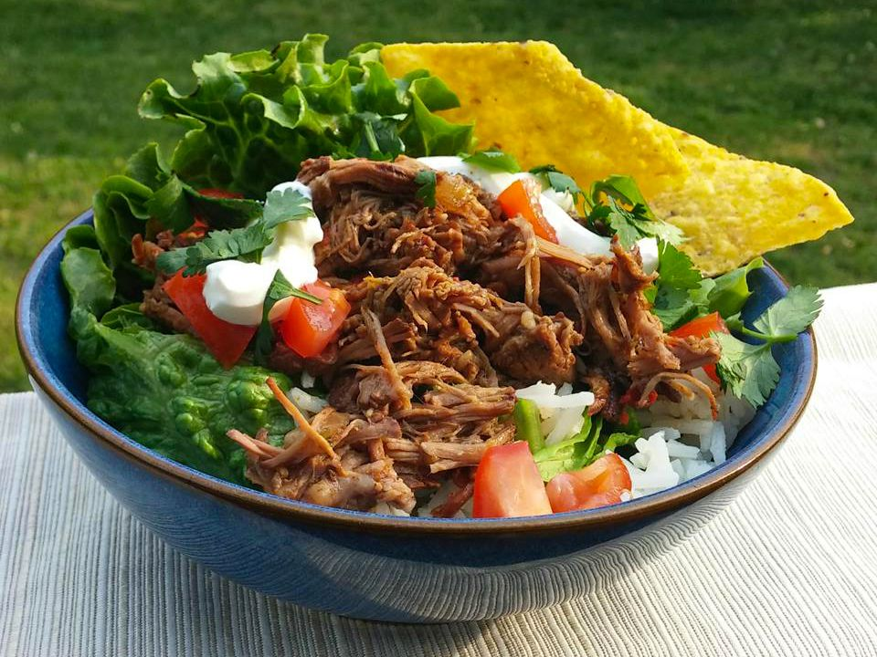

Home
Chipotle barbacoa

Description
This chipotle barbacoa is full of intense flavors such as garlic, cayenne, and sweet, smoky chipotle. Serve on corn or flour tortillas, black beans, pico de gallo, guacamole, cheese, lettuce, and sour cream.
Ingredients
- 2 tablespoons vegetable oil
- 2 pounds of beef chuck roast, trimmed and cut into 4 to 6 pieces
- 4 chipotle peppers in adobo sauce
- 1/3 cup apple cider
- 3 tablespoons lime juice
- 4 cloves garlic, peeled
- 4 teaspoons cumin
- 1 serrano chile pepper, chopped
- 1 tablespoon ground cayenne pepper,
- 2 1/2 teaspoons dried oregano
- 1 teaspoon ground black pepper
- 1 teaspoon garlic powder
- 1/2 teaspoon salt
- 1 cup chicken broth
- 1 small onion, finely chopped
- 3 bay leaves
Steps
-
Heat oil in a large skillet over low heat, gradually increasing heat to medium-high. Cook beef in hot oil until browned, about 10 seconds per side. Transfer beef to a slow cooker.
-
Combine chipotle peppers, apple cider, lime juice, garlic, cumin, serrano pepper, cayenne pepper, oregano, black pepper, garlic powder, salt, and cloves in a blender or food processor; blend until smooth. Pour over beef in the slow cooker.
-
Stir broth, onion, and bay leaves into the slow cooker.Stir broth, onion, and bay leaves into the slow cooker.
-
Cook on Low until beef shreds easily with a fork, 6 to 8 hours. Remove beef from slow cooker and shred beef using 2 forks. Return shredded beef to the slow cooker and stir to combine with sauce before serving.